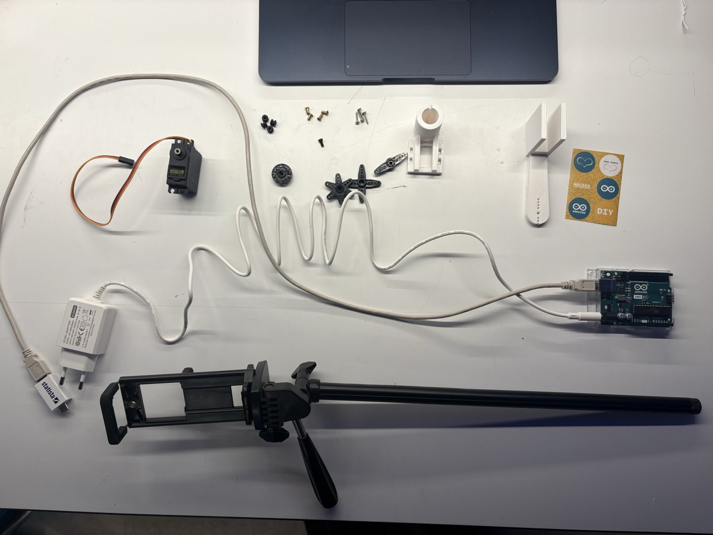
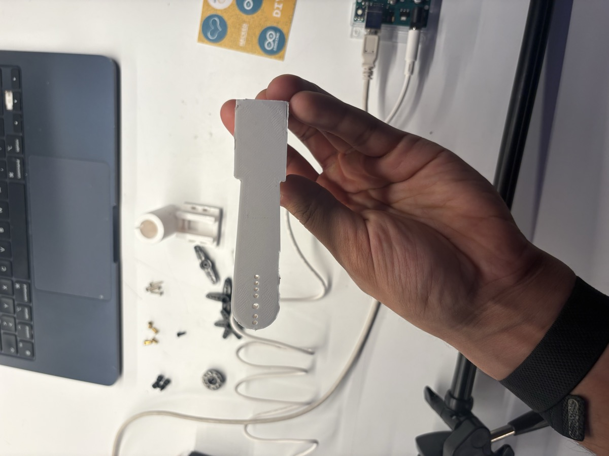
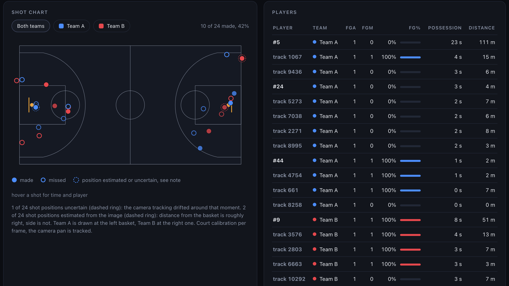
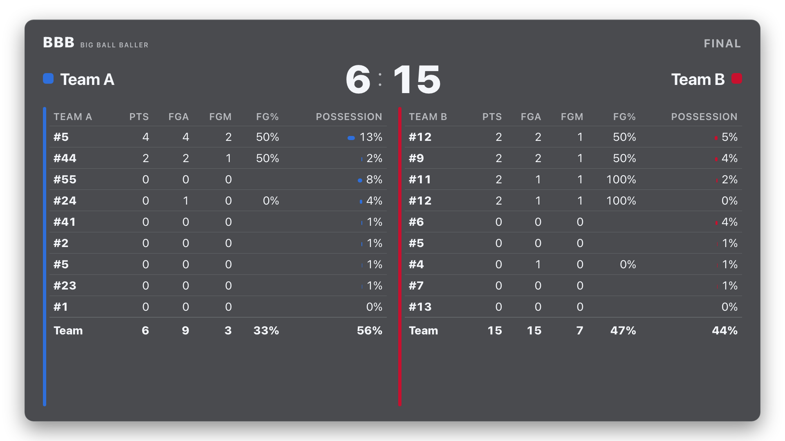
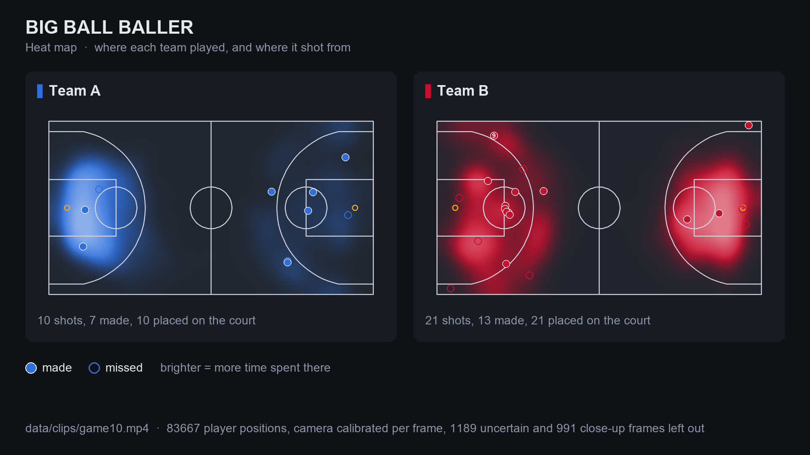
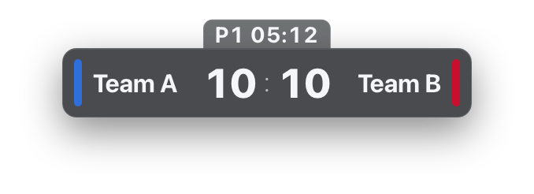
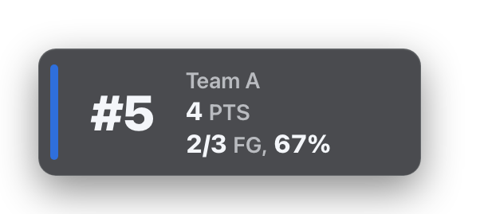

Big Ball Baller
The 20 euro robot cameraman.
A printed hand on any tripod. It follows the ball, and it keeps the stats.
30 €
the tripod
20 €
the printed robot on it
2000 €
the camera it replaces
You just saw it move. That tripod cost 30 euros. The robot on it cost 20 euros to print. The thing it replaces, a Veo or a Pixellot, costs 2000. Say the three numbers, nothing else.
Millions of games are never filmed, never analysed, never scored.
- 01An auto-tracking camera costs 2000 euros and more.
- 02A human behind the camera costs more, every single game.
- 03The games with the least support are the ones kids and volunteers run.
Behind you: 14 seconds of a Landesliga game in Berlin. This one was filmed. Almost none of them are. Not because nobody wants the footage, but because an auto-tracking camera costs 2000 euros, and a person behind a camera costs more, every single game. So youth teams, Landesliga, volunteer leagues: no film, no stats, and the score lives on a paper sheet at the table.
Retrofit the tripod they already own.
- 01Two printed parts grip the pan handle, one hobby servo, one Arduino.
- 02Their own phone is the camera.
- 03Our tracking software behind it. Ball, players, jersey numbers.


We do not sell a camera. Every club already owns a tripod and every coach owns a phone. We add a printed clamp and a printed fork arm, an SG90 servo and an Arduino, 20 euros of parts, and the phone becomes an auto-tracking camera. The software behind it is ours.
The phone sees the ball. The servo pushes the handle.
- 01The phone on the tripod streams to the laptop.
- 02The laptop finds the ball and turns it into a pan angle.
- 03The Arduino drives the servo, 40 to 140 degrees.
- 04The fork arm pushes the pan handle. Horizontal only, that covers a whole court from the scorer's table.

Four steps, one loop. The phone streams to the laptop, the laptop finds the ball and turns its position into an angle, the Arduino drives the servo, the fork arm pushes the handle. The servo sits right next to the pan axis, so servo angle is pan angle. Horizontal only: from the scorer's table plus minus 43 degrees covers both corners of the court. Tilt is the same mechanism turned by 90 degrees, version two.
60 seconds, let it run, no talking over the first ten. 0 to 10: the rig. 10 to 16: the three from the phone this afternoon. 16 to 22: the dunk, slowed down, with the animation the live mode draws. 22 to 60: the Landesliga game through the pipeline: overlay next to the 2D court, the court model following the camera pan, the dashboard with score, shot chart and player table, then live mode with the score bar.
The camera that follows the ball is the camera that keeps the stats.
- 01300 frames of a real Landesliga game auto-labeled, 3395 boxes. No human drew a box.
- 02YOLO11n fine-tuned in 25 minutes on a laptop: players 0.96, hoop 0.97 mAP50. Ball detector fine-tuned on 120 frames the coach labeled: precision 62 to 96 percent.
- 03ByteTrack keeps identities, teams by jersey colour, jersey numbers read by OCR and merged into players.
- 04Feet projected onto a 2D court through camera pans and 48 cuts, minimap next to the video.
- 05Shot events from ball and hoop geometry. FGA, FGM, FG%, possession per player.
- 06Live mode from the phone at about 10 fps: running score, auto plus two with human veto, RTMP out.

Everything on this slide ran on one MacBook today, on footage of a Berlin Landesliga game nobody films professionally. The point is the loop: film with the rig, label automatically, fine-tune, track, and the stats fall out. Six stages, read the numbers, do not read the sentences. The ball is the hard part: 25 pixels, and the coach labeled 120 frames on the laptop to get precision from 62 to 96 percent. Every game the rig films adds labeled frames.
Ten minutes of Landesliga Berlin, checked shot by shot.
24
shot attempts found
10
made
96 %
of called attempts were real shots
73 %
made or missed called right

These are human-checked numbers, not model numbers. Ten minutes of the game, 24 attempts found, 10 made, Team A 6 points, Team B 15. A human went through every call: 96 percent of the attempts were real shots, made or miss right three times out of four, the shooter's team right in 77 percent. The honest number: the shooter as a person is right in 40 percent, that is the next thing to fix, and it is a data problem, not a logic problem.
Score, player cards and heat maps on the stream.



- 01Live score bug and running clock.
- 02Player card on every made basket.
- 03Heat map and end summary per team.
- 04One key confirms or corrects any call. The system never overrules a person.
The same data drawn on the stream: a score bug with the clock, a player card when a basket goes in, a heat map of where each team played and shot from, and an end summary. Streams to YouTube or Twitch through RTMP. And the rule for all of it: auto with veto. The system calls, the human at the table presses one key to confirm or correct.
One position layer, three products.
Broadcast
Names, numbers and live score on the video. Easier to follow for kids and for viewers with disabilities.
Fans, parents, players
Coaches
Shot charts, movement, possession, opponent tendencies from every filmed game.
Clubs, B2B
Scorekeeping
The camera that follows the ball keeps the score. Auto with veto for the volunteer at the table.
Leagues, federations
The rig is the cheapest entry into a position data layer. Once every player and the ball are on a 2D court, three products sit on the same data: the broadcast overlays for the people watching, analytics for the coach, and the scoreboard for the volunteer league that runs on one person with a pen. The rig is also the data machine: every game it films is training data.
Designed, printed, wired and demoed in one day at CODE.
Malek built the rig. Sami built the analytics.
Next: a real game this semester. The rig on the sideline, the stats on the coach's phone.
Two people, one day. Malek designed and printed the rig and wrote the firmware. Sami built the vision pipeline, the dashboard and the live mode. Next step is one concrete game this semester with the rig on the sideline and the stats on the coach's phone.
Big Ball Baller
The 20 euro robot cameraman.
Malek and Sami, CODE Hackathon Berlin, 28 August 2026.
github.com/Malek1414/code-hackathon-project
Questions. Tilt: same mechanism rotated, version two. Digital crop instead of a servo: we do that too, but a physical pan keeps full sensor resolution on the action, which the analytics needs. Privacy with minors: everything runs on the laptop that films, nothing is uploaded unless a stream URL is set on purpose, no model uses faces, identity comes from jersey number and colour, and export blurs heads.
arrows to navigate, n for notes, f for fullscreen, t resets the clock